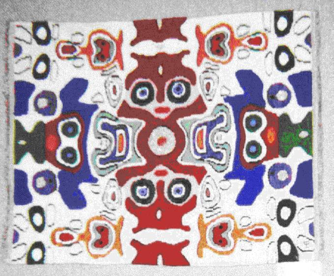
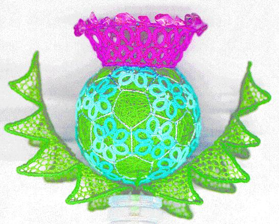
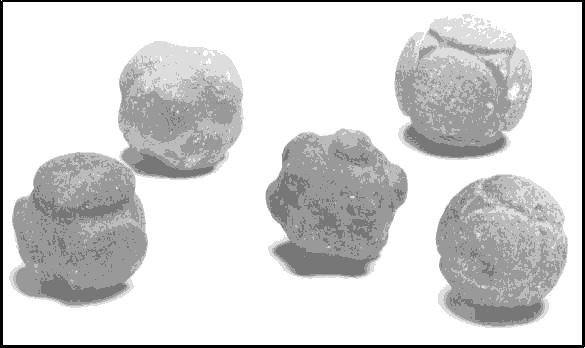

Crystallographic Arts
One way to interest more people in crystallography is by encouraging
artists to create works inspired by crystallography. Another way is to
'catch 'em young', I was delighted to see the results of an international
crystal growing competition and to learn that in the United States, the
National Aeronautics and Space Administration, NASA, plans publication of a
booklet for schools explaining how to grow crystals from common foods like
green beans. They believe that children shown the wonders of science now, as
adults will vote more money for NASA projects.
In the following pages I have tried to report on the Art Exhibition,
with its poetry, handicrafts and some Scottish history for the education of
delegates when they were sated with posters. The Art Exhibition was
originally near the Clyde Auditorium but exhibitors felt it was out of the
way, so it was moved into the main exhibition area to make a colourful
entrance way to the commercial exhibits past hangings such as the one below.
These were arranged by Annegret Haake who became
interested in crystallographic patterns while searching for examples of
symmetry in everyday life. She had been collecting patterns from Oriental
carpets, American patchwork, Javanese batik and tiling patterns on
pavements. One day she asked a patchwork teacher to use a model crystal
structure as a basis for her patterns. She was enthusiastic about this and
told her friends.
Now Annegret has formed a group of artists, known as XX-TEX, which makes
handicrafts using all types of TEXtiles from crystallographic (XX) patterns.
Their first works were shown in 1990 at the Bordeaux Congress, they make new
designs on a common theme for each Congress. This year their work, like the
hanging depicted above, is based on contour plots found in J.M.Robertson's
papers and in his book 'Organic Crystals and Molecules', 1953. They
find that the scientists enjoy seeing the novel interpretations of their
diagrams, (some even buy them to hang up at home), and the artists get in
touch with an unknown but fascinating science.
Lawrence Bragg may have been the first to suggest using crystallographic
patterns for artistic inspiration. In a booklet published for the Festival
of Britain in 1951 'THE SOUVENIR BOOK OF CRYSTAL DESIGNS. The fascinating
story in colour of the FESTIVAL PATTERN GROUP', he wrote 'When in 1922 I
worked out the first crystal of any complexity that had been analysed,
aragonite, I remember well how excited my wife was with the pattern I showed
her as a motif for a piece of embroidery....'
More Crystallographic Art, philately and history

Doris Büdel made the most intricate creation, a model of the Congress
logo shown on the left. She called it "A Very Special Flower".
It fits into a cube of side 8cm, Several different techniques were used to
make it. The central ball is solid, wound from dark green silk thread using
the methods of Japanese Temari work. The petals forming the hexagons on the
surface are tatting; the leaves are wire stiffened needlepoint lace. The
'flower head' petals are tatting, crowned with appliqued crystals of
amethyst. These were almost the only real crystals to be seen in the whole
Congress!
 Some three years ago the
BCA Council began to urge the UK Post office to issue a set of stamps to
commemorate IUCr XVIII in Glasgow. For 1999 the Post Office decided to issue
monthly sets of stamps on a common theme; on 3 August 1999, the day before
the Congress opened, they issued 'Scientists Tales'.
Some three years ago the
BCA Council began to urge the UK Post office to issue a set of stamps to
commemorate IUCr XVIII in Glasgow. For 1999 the Post Office decided to issue
monthly sets of stamps on a common theme; on 3 August 1999, the day before
the Congress opened, they issued 'Scientists Tales'.
The stamps were on
sale at the 'Messages' Desk in the Exhibition, including this one, the
celebration of the discovery of the structure of DNA.
Alan Mackay had some Scottish history on his poster, including the stone
balls shown below, which he thought meant that Stone Age Scots were familiar
with Group theory.
These granite balls are found mostly in North Eastern
Scotland. They are a few cm across; no one knows their use. They are
accurately shaped into different polyhedral forms. The icosahedral one in
the centre may be a model of a virus? The outer octahedral ones could also
be molecular models.
Did Neolithic Scots discover the shapes now erroneously known as the Platonic
solids?
The photograph above is copyright the Ashmolean Museum, Oxford,
where the balls can be seen.
Poem for IUCrXVIII
The poem below was written for the IUCr Glasgow Congress. Part of his "Zen"
series, the poet tries to capture the vast scope of crystallography,
extending from our macroscopic world to the inner structure of (biological)
tissues and finally to a nano-universe in which the atoms themselves loom
like giant planets...
The Zen of Scale
Launched on a journey
across the void of dimensions
from the intricate tapestry of tissues
to the rhythms encoded in atoms
arriving at last
to orbit electron-gas giants.
© Robin Shirley 1998
Robin Shirley is an English poet, crystallographer and computer scientist
who was brought up in an artistic milieu, his family traditions being split
equally between art and sciences. His software article appears later in the
'powder diffraction ' section on page 53.
The very last day....
I found Justin Wark's lecture in the last plenary session, 'Picosecond
X-ray diffraction', to be the most exciting, with its prospect of much
cheaper, faster X-ray sources using lasers.
The Closing Ceremony was held in the Barony Hall of Strathclyde
University, adjacent to the Hall of Residence where many of us were staying.
Judith Howard thanked everyone who had helped to make this Congress such a
success before inviting Steve Maginn to present the CCDC prizes for
the best posters by young scientists. Judged by a panel of distinguished
crystallographers, four prizes were awarded. They were (in no
particular order): P08.06.010: Peter Muller, Gottingen University,
Germany; "Holes in Crystals ?"
- P11.0D.001: Alicia Beatty & Christer Aakeroy, Kansas State University, USA;
"Beyond the first dimension: organic/inorganic hybrid materials assembled via H-bonds"
- P09.09.008: C. Baehtz & H. Fuess, Darmstadt University, Germany;
"Tetrathiafulvalene and tetracyano-p-quinodimethane in faujasite"
- P13.22.003: S. Leoni & R. Nesper; "Tilings on hyperbolic surfaces as representatives of
chemical networks"
The Oxford Cryosystems prize for the best poster associated with
cryogenics was awarded to F.Wien for poster P08.01.003 "A portable
Cryostream to transfer crystals"
The outgoing IUCr President, Ted Baker,
explained he had known this would be a wonderful Congress, years ago, when
he had heard Chris Gilmore et al. explaining how to translate Glaswegian. He
handed over to the new President, Henk Schenk, who recalled his first visit
to an IUCr Congress in Stonybrook, USA, thanked Ted for preparing the IUCr
so well for the new century and looked forward to working with us all for
the next 3 years.
KateCrennell
Page last updated 16 Oct 1999
BCA Home page WebMaster
BCA@ISISE.RL.AC.UK
 Click here to return to BCA homepage
Click here to return to BCA homepage